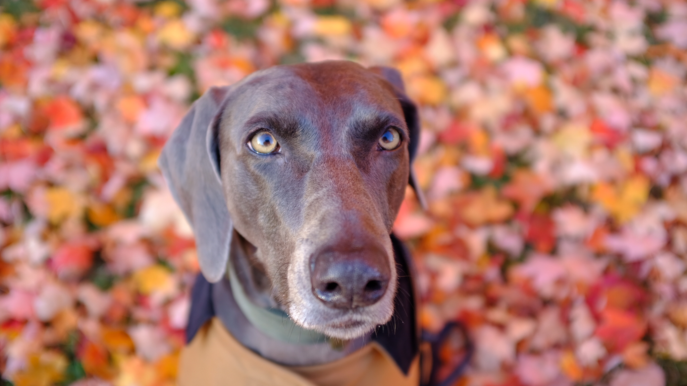
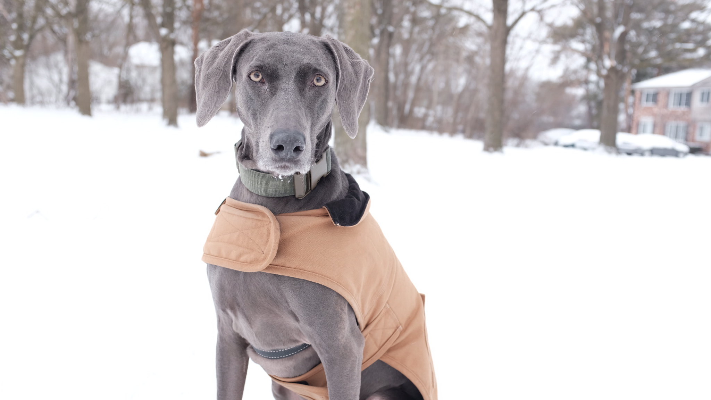
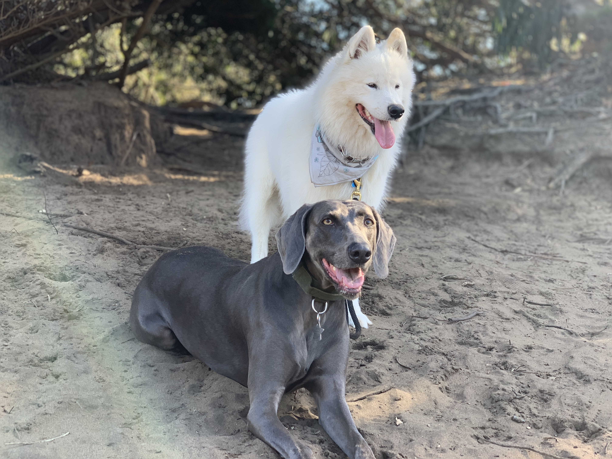
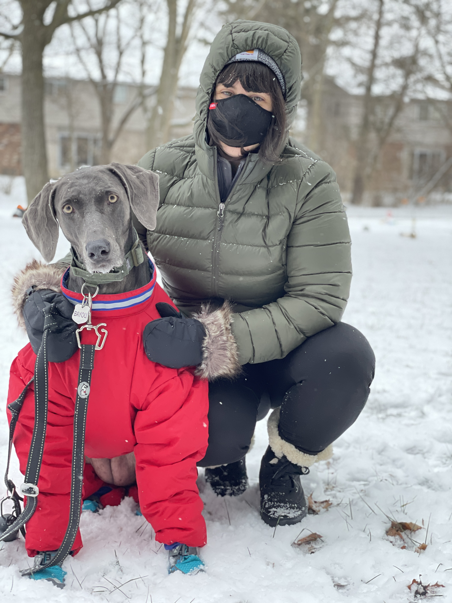
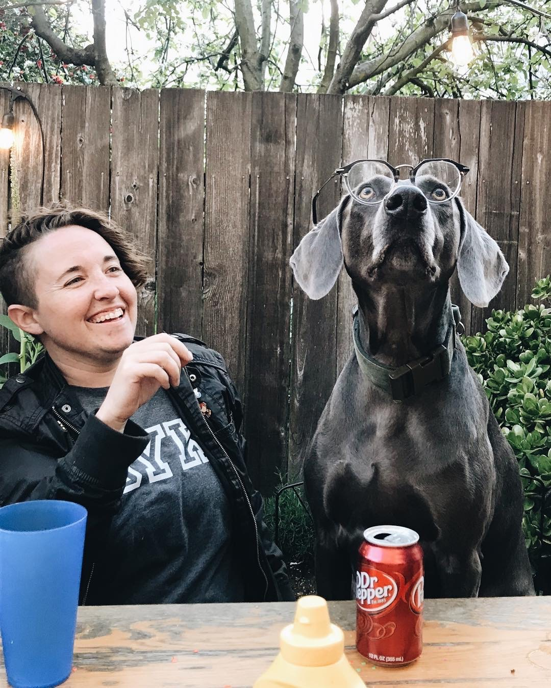
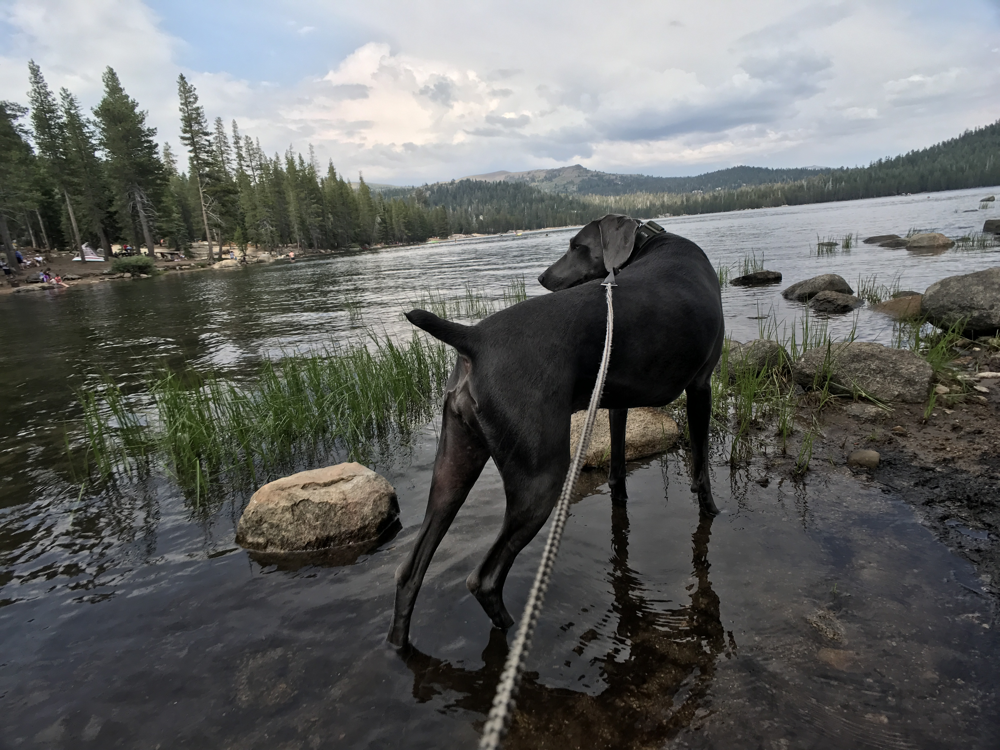
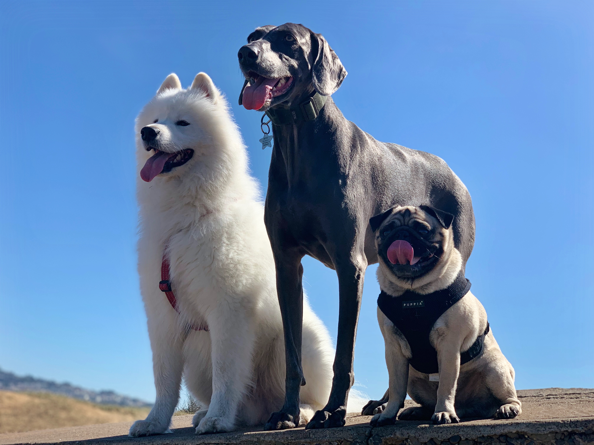

I love to be outside sometimes. I've gone on many great adventures here.

My first fall.

My first winter.Rocking my beach bod in California.

Me and my friend Poto who likes to lick my mouth.

Me in my snowsuit and snowshoes. Please don't laugh at me. My mom made me wear it.

My mom and I hanging out.

Me at Lake Alpine in California.

Me and my friends, Poto and Walter, at Fort Funston in San Francisco.Me on a hike on the Arnold Rim Trail at Cougar Peak.